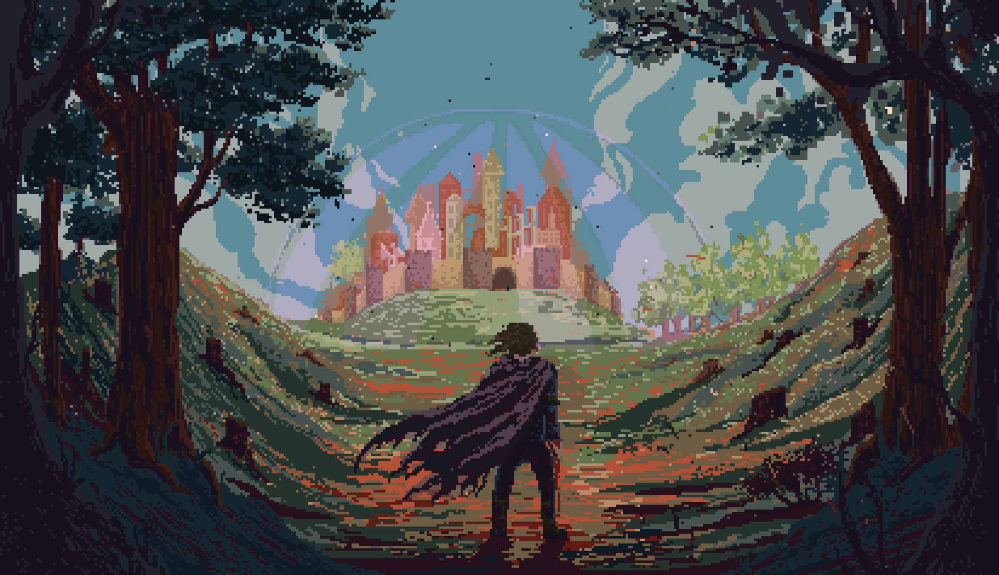

Player Trade
Safe, all-or-nothing trading between players.

Adventure the way it was meant to be
Before waypoints told you where to walk. Before every NPC was a vending machine. Before "choices" meant picking dialogue that led to the same ending.
There was a time when you had to think. When the world didn't care if you were ready. When getting lost was part of the journey, and discovering a secret felt like uncovering forbidden knowledge.
Modern Mud is a return to that era—rebuilt for those who refuse to forget.
The blacksmith wakes at dawn. He lights his forge, eats breakfast with his daughter, and walks to his shop. He has debts to pay, a rival he despises, and a dream of forging a blade worthy of the old kings. He doesn't care about your quest.
But help him once, and he remembers. Hurt his daughter, and he'll never forget. Kill him, and his apprentice takes over—carrying the memory of what you did to his master.
NPCs aren't scenery. They have friends who mourn them, enemies who celebrate their fall, and allies who come running when they call for help. Attack the guard, and his partner draws steel. Threaten the merchant, and the tavern keeper—his old friend—refuses you service.
They gossip. They hold grudges. They protect their own. Some will lie to protect a friend. Others will betray their kin for the right price. Learn who trusts whom, and you'll find secrets that brute force could never uncover.
Six deities observe from beyond the veil. They see the toll you demanded from a desperate traveler. They witnessed your blade fall on an unconscious foe. They know which oaths you've broken.
Their favor opens paths mortals cannot walk. Their wrath closes them forever. Not every class can serve every god, and some doors, once shut, never open again.
Block the mountain pass and demand tribute from all who wish to cross. Let your enemies pay in gold or blood—the choice is theirs. Build your guild into a force that controls territories, where your banner flies and your laws rule. But remember: what you take, others will come to reclaim.
The playtest is live. Next up: crafts and trade.
Safe, all-or-nothing trading between players.
Two primaries, one to gather and one to craft. Skill cap 300. The smith needs the miner.
Forges, anvils and minigames decide the quality, from crude to masterwork. Your name on every piece.
Ore veins that replenish, smelting, and weapons and armor forged by players.
Monsters and PvE deaths wear your gear down; a smith fixes it. PvP deaths cost nothing.
The players who use your creations will turn you into a legend.
The best masters aren't in town. The highest rank has no living teacher left.
Renowned crafters train apprentices who learn faster at their side.
One of a kind in the whole world, forged in a ritual by a master and their apprentices.
Cooking, fishing, alchemy and leatherworking, each as deep as the rest.
Exorcist, Scholar, Gravedigger, Spy, Smuggler: quests and secrets no one else can see.
Hidden karma, rumors, groups, raids, dungeons, farming and tavern games.
The city on the cover. The greatest trading city in Alandria, the only one sheltered by a dome that has held for over five hundred years. Its people live in comfort while the rest of the world fights to survive, and they never let you forget it.
The safest city in the world. Or so they say.
Plans can change. The full, living board is public on Trello.
If you need a quest marker to find purpose, look elsewhere. If you expect the world to pause while you check your inventory, this isn't for you. If you want guaranteed victory because you paid for the best gear, keep walking.
But if you remember what it felt like to earn something—to discover a secret no guide had spoiled, to build a reputation through deeds rather than grinding, to feel genuine tension when you turned a corner in hostile territory—
"Welcome home."